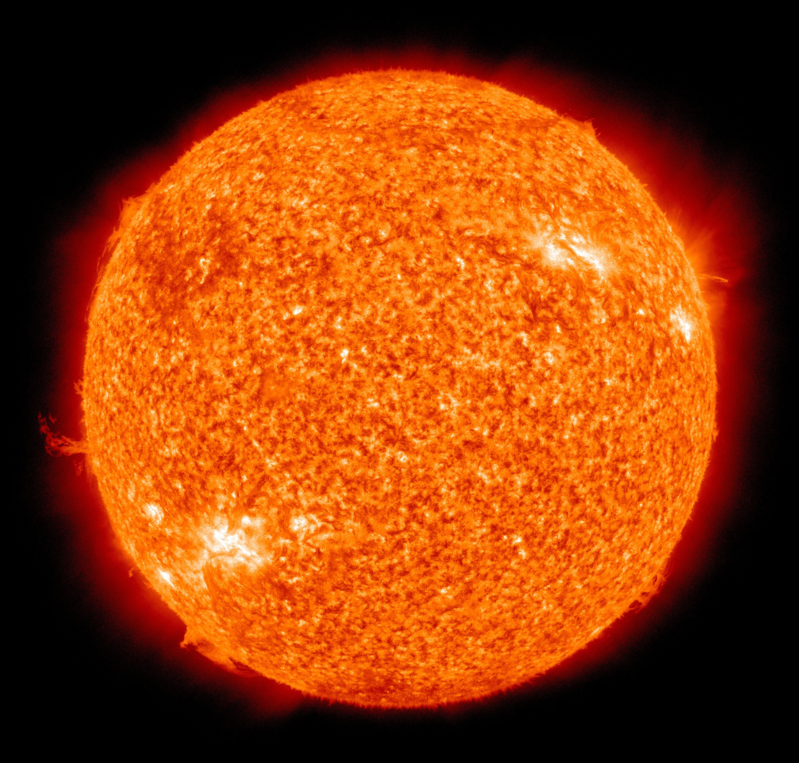

Milkyway!! the galaxy where we lives,basically it is where our solar system is resided. Like our solar system almost millions of solar systems consists of many planets live in the Milkyway Galaxy. It is very much huge in size ,almost 100 of millions light years required to travel from one corner to another corner of the galaxy.
Milkyway Galaxy
THE SOLAR SYSTEM
The family members of solar system are:
SUN
MERCURY
VENUS
EARTH
MARS
SATURN
JUPITAR
URANUS
NAPTUNE
THE SUN
SUN is the only star of our solar system. It is the powerhouse of our solar system.IT provides us light,heat overall energies. It consists of H2& He gas.This gases continuously produces energy with the help of neuclear fussion reaction among there elements neucleus.

SUN
approximately minutes needed by sun light to come all the way to earth
THE EARTH
Earthis the only planet in the solar system which contains life.this is because of earths atmosphere which is made of mostly N2gas,o2gas,Ar and various other important elements.there is a layer called ozone(O3)which restricts the UV rays coming from the sun.With the help of oxygen we can take breathe.and that is the only reason for having life only in earth.The only natural satellite of earth is MOON.
Earth
THE MARS
Mars is the nearest planet from our home earth.It is the second planet after earth where humans have done more projects and experiments then other planets.It should be notted that the projects of mars had done by the Rovers which was sent from earth to mars.
It is being said that in near future humans will colonialise mars after the first flight towards mars will be taken off from earth with human beings in year 2030